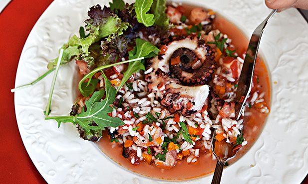

Arroz de Polvo

Description of the recipe
This actual Portuguese octopus recipe varies from restaurant to restaurant,
but the recipe below is based on a traditional favorite, blended to enhance the taste of the octopus and the flavor of the sea.
Ingredients
- 1kg of octopus
- 1 cup of red wine
- 3/4 cup of olive oil
- 2 cloves of garlic, finely chopped
- 3 tomatoes, skinned and chopped
- 1 large green pepper, chopped
- Salt, to taste
- Pepper, to taste
- 2 cups of short grain rice
Steps
- Precook octopus in red wine with a little water. The octopus will exude liquid so that you are likely to end up with more cooking liquid at the end,
keep this and add water to make it up to 2 and half cups.
- Cut the drained octopus into small pieces.
- Heat the olive oil in a large saucepan and add the chopped onion and cook gently, stirring, for 2 or 3 minutes.
- Add the garlic, tomatoes, and chopped pepper, season with salt and pepper to taste and cook for a few minutes longer.
- Add the octopus and cooking liquid from the octopus and bring it to a boil.
- Add rice (preferably a short-grain) and bring back to a boil, then turn the heat very low and put the lid on the saucepan.
- After 15 minutes, stir to ensure the rice is not sticking to the bottom.
- After 5 minutes, taste the rice to make sure it's done.